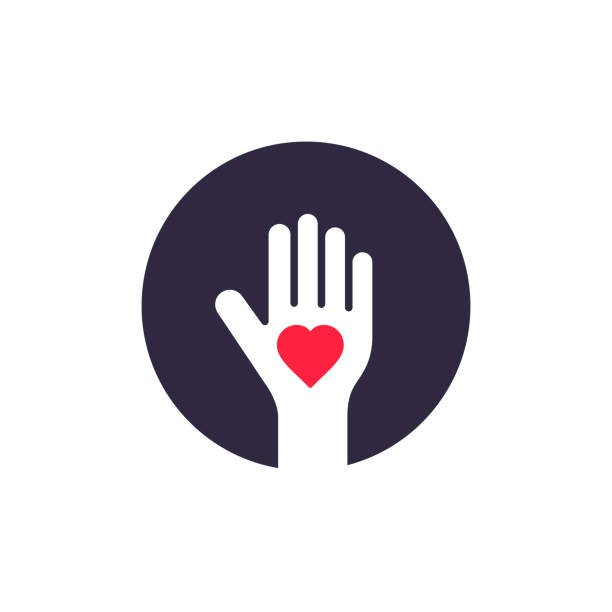

Andrea Shoukair
Clinical Trial coordinator + QA
Speech Thearpist and Audiologist
Linguist
andrea_shoukair@yahoo.com
054-2597707
Skills
work with EDC systems
organization
punctuality
interpersonal communication
Languages
English
Hebrew
Slovak
Arabic
Work Experience
Clinical trial coordinator / Pharma - Hematology
Current
7 year experience in coordinating clinical trials. The job includes submission of all essential documents to the local Ethical Committee, planning and coordinating the clinical work in accordance with the protocol, data capture in various EDC (Electronic Data Capture) systems and medication dispensing in IWRS (Interactive Web Response System).
Speech therapist
Current
10 year experience in treating acquired communication disorders in adult population caused by stroke, neurological diseases and cognitive decline. I provide services in the HMO Meukhedet and in my private practice as well.
Lecturer in Linguistics
Previous
I have various experiences in lecturing. I lectured in Arabic linguistics at the Tel Aviv University and Haifa University, both as a full time and a guest lecturer.
Voluntary work
Child care - South Africa IVHQ program
September 2021
I participated together with my daughter in the IVHQ volunteer program in South Africa , Muizenberg, to assist with early childhood education in low-income areas. It was the most rewarding experience and I would definitely do it again.
click here to see more
Education

Course of QA and automation
QA Masters
Course GCP and CRA
Bioforum, Tel Aviv
Speech Therapy and Audiology, BA
University of Haifa
Linguistics, MA in English, PhD in Arabic
Commenius University of Bratislava and University of Haifa
Something more about me...
Two and a half years ago I decided to make my dream come true and I started to take lessons in Latin-American ballroom dances. Since then I participated in one local competition in Ashdod and two international competitions in Warsaw and Budapest. At the competitions I also had an opportunity to take lessons from the most renowned dancers in the world. Since I can sew, I also make my own dance costumes.
Apparently, it is never too late...
click here if you want to see more